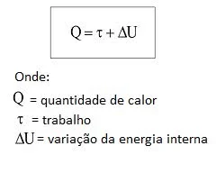
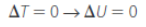
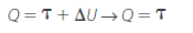
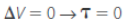
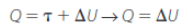
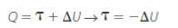
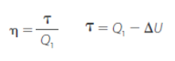
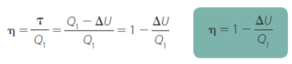
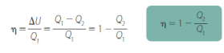
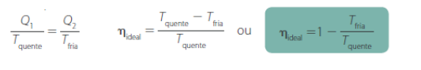

Termodinâmica
A Termodinâmica é a área da Física que estuda diversos fenômenos e sistemas físicos complexos em que podem ocorrer trocas de calor, transformações de energia e variações de temperatura. Ela busca compreender as relações entre calor, energia e trabalho, analisando quantidades de calor trocadas e os trabalhos realizados em um processo físico.
Leis da termodinâmica
As leis fundamentais da termodinâmica regem o modo como o calor se transforma em trabalho e vice-versa.
Primeira Lei da Termodinâmica
A Primeira Lei da Termodinâmica se relaciona com o princípio da conservação da energia. Isso quer dizer que a energia em um sistema não pode ser destruída nem criada, somente transformada.
A fórmula que representa a primeira lei da termodinâmica é esta:
A quantidade de calor, o trabalho e a variação de energia interna possuem como unidade de medida padrão o Joule (J).
Um exemplo prático da conservação de energia ocorre quando uma pessoa usa uma bomba para encher um objeto inflável, ela está usando força para colocar ar dentro do objeto. Isso significa que a energia cinética faz o pistão abaixar. No entanto, parte dessa energia se transforma em calor, que é perdida para o meio.
A primeira Lei da Termodinâmica possui algumas transformações particulares, são elas:
Transformação isotérmica (sem variação de temperatura)
- Uma dica para memorizar as transformações: pense na palavra, 'iso' remete a algo isolado e 'térmica' a temperatura, então isotérmica é com uma temperatura sem variação!
Nas transformações em que a temperatura não varia, também não há variação de energia interna.

Considerando um gás ideal, a quantidade de calor será igual ao trabalho
Transformação isovolumétrica (sem variação de volume)
Transformações nas quais não existe variação de volume, não há realização de trabalho.

Considerando um gás ideal, a Quantidade de calor será igual à variação de energia interna
Transformação isobárica (sem variação de pressão)
Nesse tipo de transformação, se houver expansão do gás, haverá também um aumento do volume e da temperatura do gás, fazendo com que a variação de energia interna seja positiva, caso haja uma compressão do gás, a variação de energia interna será negativa.
Transformação adiabática (Q = 0)
Quando houver uma transformação adiabática, significa que não houve troca de calor, portanto, o valor de Q será zero (Q = 0).
Considerando um gás ideal, o valor do trabalho será igual à variação de energia interna negativa
Rendimento de máquinas térmicas
Uma máquina térmica funciona em ciclos, com calor sendo transferido de uma fonte quente (Q1) para uma fonte fria (Q2).
O rendimento é obtido pela razão entre a quantiddade de energia fornecida e a quantidade de energia utilizada. No caso das máquinas térmicas, a definição é a seguinte: o rendimento (n) é o resultado da razão entre o trabalho produzido (t) e a quantidade de calor fornecida (Q1).


Segunda Lei da Termodinâmica
O rendimento ideal (n) depende da diferença de temperatura entre a fonte quente (entrada) e a fonte fria (saída). Essas considerações feitas por Carnot teve como resultado a seguinte equação:
